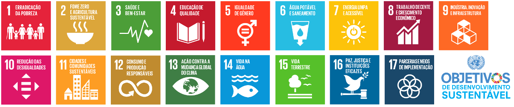

OQUE É A PRODUÇÃO E CONSUMO SUSTENTÁVEL?
A produção e consumo sustentável nada mais é que olhar para o futuro e saber que seus filhos estarão vivendo bem nesse mundo.
Você já se perguntou sobre para onde vão parar todas as sacolas plásticas que ao ir ao mercado você pega desnecessariamente? Ou então já se perguntou onde aquela fabricante de produtos que não vendem joga o estoque que "sobra"?
É sobre isso que a ODS(Objetivo de Desenvolvimento Sustentável) 12 quer tratar.
Mas vamos primeiro entender o que são as ODS's:
Os Objetivos de Desenvolvimento Sustentável(ODS) são um conjunto de objetivos formulados pela ONU no objetivo de atingir metas sustentáveis por todo o mundo até o ano 2030. No total são 17 ODS's que juntas englobam problemas globais e tem como objetivo acabar com os mesmos.
